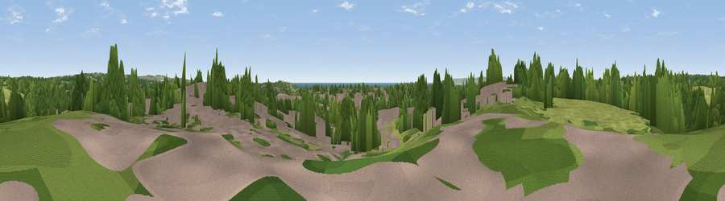

Viewpoint near Bexhill-on-Sea
#32716 in England · top 47% of its area beats it · near Bexhill-on-SeaThe view, rendered

A 360° render of this exact spot computed from the terrain model, tree cover and land cover — summer colours, afternoon light, calibrated against photographs of famous viewpoints. Real trees, hedges and buildings will differ in detail.
The panorama
Grey silhouette: terrain skyline in each direction (720 bearings, Earth curvature and refraction included). Dashed green: skyline with trees (+15 m) and buildings (+8 m) as obstacles. Blue strip: how far the ground is visible on each bearing.
Where the view opens
Wedge length = distance to the farthest visible ground on that bearing (vegetation-aware). Rings at 10, 25 and 50 km.
What fills the view
41% grassland · 31% woodland · 23% built-up · 4% water · 1% cropland
Angular shares of the visible panorama (visual magnitude), not map area. Landscape diversity 0.55 (0–1 Shannon).
Key numbers
More beautiful places nearby
The staircase of upgrades: each row has a higher view potential than everything closer. Driving times are estimates from straight-line distance, calibrated against real road routing — check an actual route before setting out.
| Place | Direction | Drive | Score |
|---|---|---|---|
| Viewpoint near Hooe | W · 1 km | ~3 min | 46.1 |
| Galley Hill | SE · 4 km | ~8 min | 53.8 |
| Viewpoint near Crowhurst | ENE · 4 km | ~9 min | 56.4 |
| Viewpoint near Catsfield | NNW · 6 km | ~12 min | 56.8 |
| Viewpoint near Telham | NE · 6 km | ~13 min | 62.2 |
| Viewpoint near Hastings | E · 9 km | ~18 min | 67.0 |
| Viewpoint near Three Oaks | ENE · 10 km | ~19 min | 69.3 |
| Viewpoint near Hastings | E · 10 km | ~20 min | 70.5 |
50.86116, 0.45648 · source: screening · position refined by local search. Computed location — check access rights before visiting.